Make your own TS2068 games, in the browser.
Leap Arcade is a small structured BASIC for fast action games on the Timex Sinclair 2068, with a sprite, tile and music editor and an emulator built in. Write, press Run, play. When it is good, download a cartridge for a real machine.
Nothing to install: it runs entirely in your browser. Every game below is made with Leap Arcade and opens in the Studio with its code, art and music.
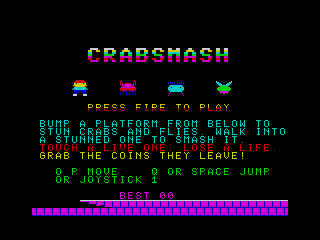
Getting started
Ten minutes from nothing to your own game. Everything happens in the Studio, the page that opens when you press Open the Studio.
Open the Studio
Open Leap Arcade Studio It is one page with your code in the middle, the TS2068 on the right and your project on the left. Your work is saved in the browser as you type.
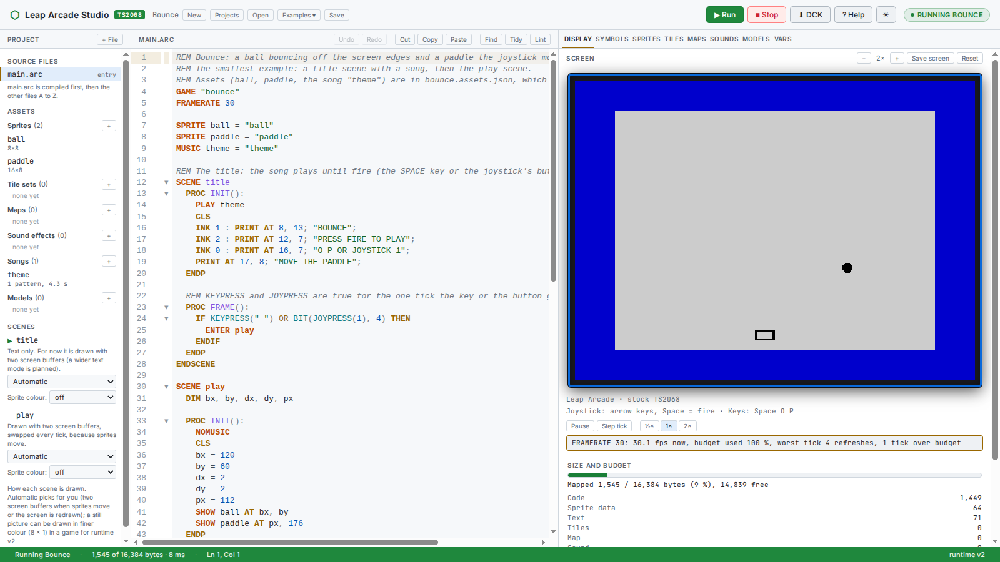
Play an example first
Open Examples ▾, choose Bounce and press ▶ Run (F5). Click the TS2068 screen so it gets the keyboard, then press Space to start. O and P (or the arrow keys) move the paddle.
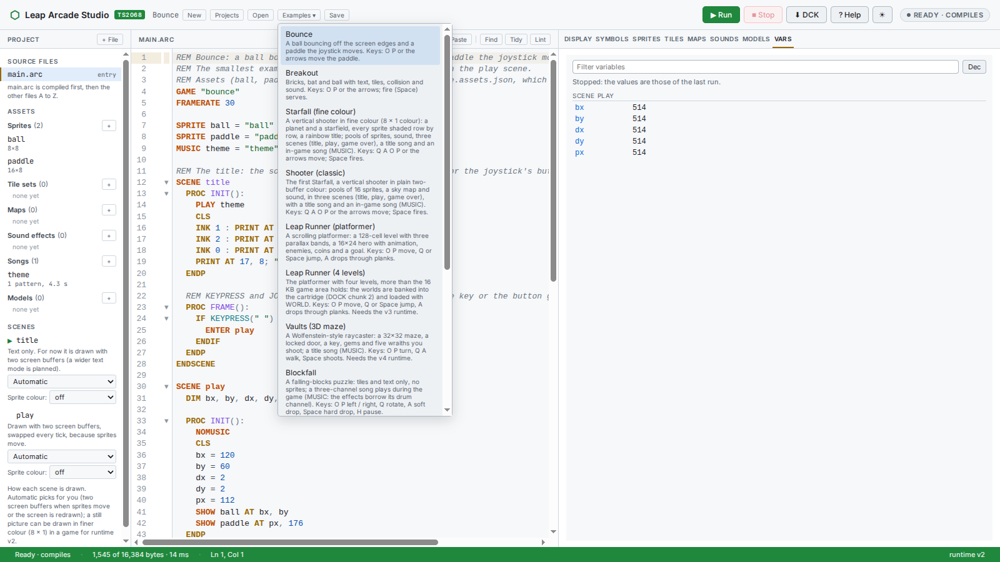
Start a new game
Press New. Every new project starts from a small, finished game with comments that say what to change. Blank game (Star Dash) is the one to start with: steer a ball onto a star before the clock runs out.
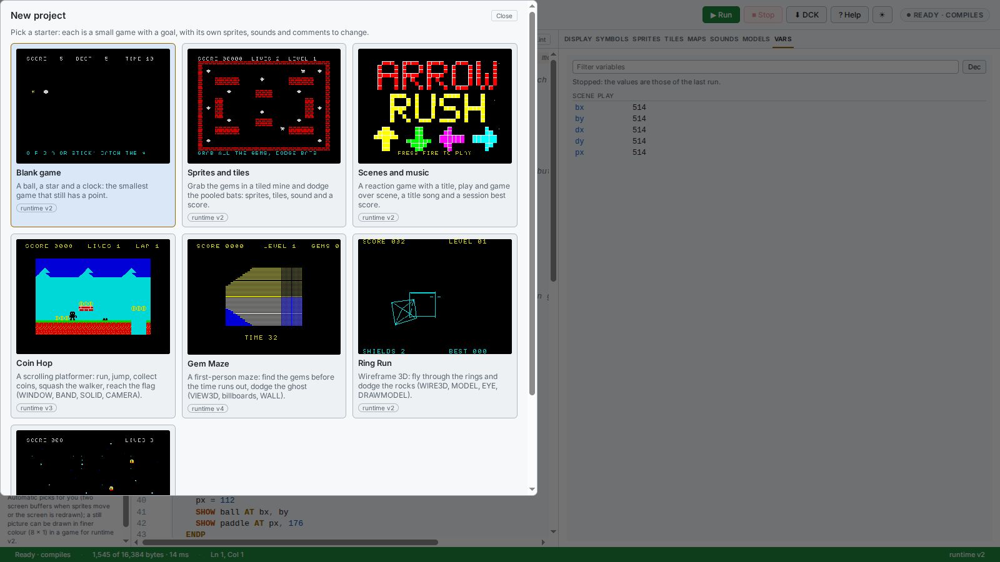
Run it, then try three small changes: set CONST SPEED = 3 to 5 (a faster ball), change clock = 300 in NEWGAME to 150 (it counts 30 to a second, so that is 5 seconds), and change the "*" in NEWSTAR to another character.
How a program is shaped
The language looks like BASIC: no line numbers, IF … ENDIF, PROC … ENDP. A game is split into scenes (title, play, game over). You never write the main loop: the runtime calls your FRAME procedure every tick, draws whatever you changed and keeps the sound going.
GAME "My game" REM the title, once
FRAMERATE 30 REM FRAME runs 30 times a second
SPRITE ball = "ball" REM a picture you draw in the Sprites tab
SCENE play REM a part of the game; the first scene starts it
DIM x, y REM this scene's variables
PROC INIT(): REM runs once when the scene starts
x = 120 : y = 88
ENDP
PROC FRAME(): REM runs every tick
IF KEYDOWN("P") THEN
x = x + 2
ENDIF
SHOW ball AT x, y REM place the sprite; y counts from the top
ENDP
ENDSCENE| Remember | |
|---|---|
ENTER name | switches scene. It does not return; the new scene's INIT runs at once. |
| Numbers | 16-bit whole numbers only. To move slower than a pixel a tick, keep positions in 1/8 pixels and divide when you SHOW. |
| Screen | 256 × 192 pixels, y from the top. Text is 32 columns × 24 rows: PRINT AT row, col; "HI". |
No GOTO | Use IF, FOR, WHILE, PROC/CALL and scenes. |
| Input | KEYDOWN("O") (held), KEYPRESS(" ") (the one tick it goes down), STICK(1) and JOYPRESS(1) (joystick bits: 0 up, 1 down, 2 left, 3 right, 4 fire; test with BIT(v, n)). |
Read Bounce, line by line
Open Bounce and read main.arc: about 100 lines, a title scene with a song and a play scene. The title waits for fire, then switches scene:
SCENE title
PROC INIT():
PLAY theme
CLS
INK 1 : PRINT AT 8, 13; "BOUNCE";
ENDP
PROC FRAME():
IF KEYPRESS(" ") OR BIT(JOYPRESS(1), 4) THEN
ENTER play
ENDIF
ENDP
ENDSCENEThe play scene, every tick: read the keys, move the numbers, SHOW the sprites where they are now. That is a whole game.
The words you will use most
| Group | Words |
|---|---|
| Structure | GAME FRAMERATE SCENE/ENDSCENE ENTER PROC/ENDP CALL CONST LOCAL END |
| Control | IF/ELSE/ENDIF FOR/NEXT WHILE/WEND |
| Sprites | SHOW s AT x, y [FRAME f] HIDE s HIT(a, b) |
| Text and colour | PRINT AT r, c; … (with TAB and USING "###") CLS INK PAPER BRIGHT FLASH BORDER |
| Tiles | TILE x, y = t TILEAT(x, y) LOADMAP FILL |
| Sound | PLAY name SILENCE NOMUSIC |
| Maths | ABS RND MOD DIV BAND BOR SHL SHR BIT |
| Timing | TIMER a: a variable the game counts down by itself |
Press F1 in the Studio for every word with its forms and an example.
Draw your own art and sound
The tabs on the right are the editors. Each asset has a name; SPRITE ship = "ship" in your code connects the name to the picture.
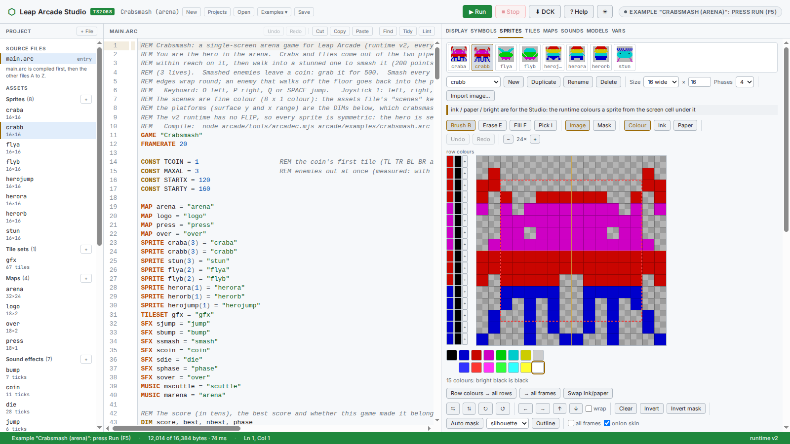
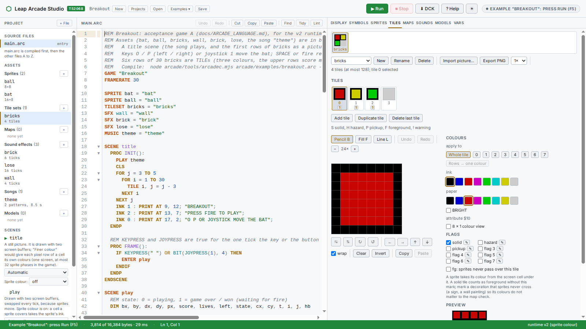
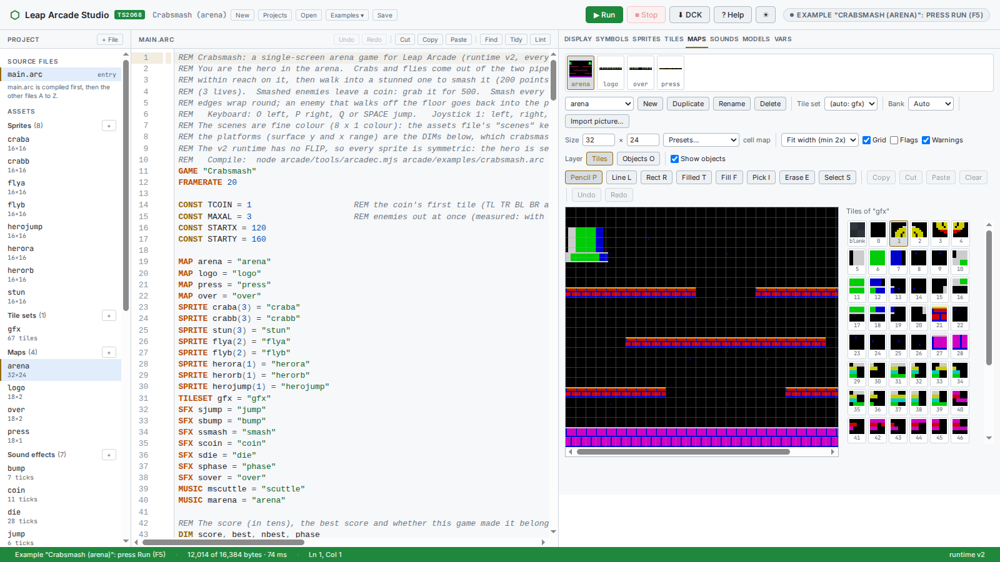
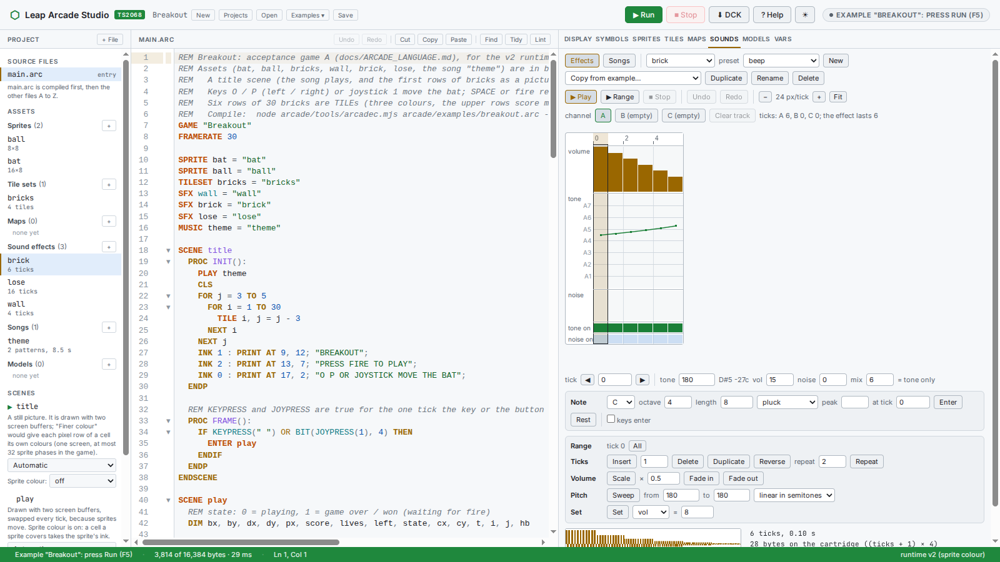
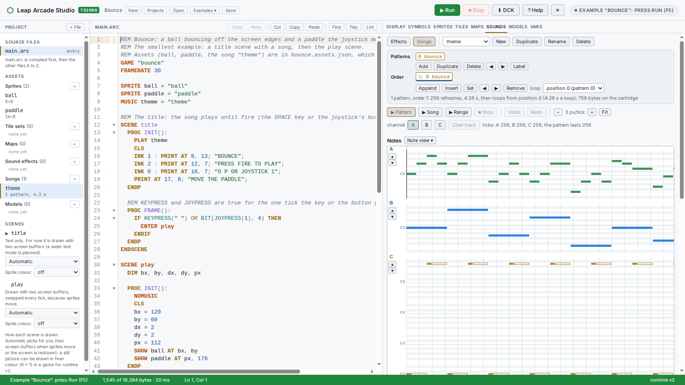
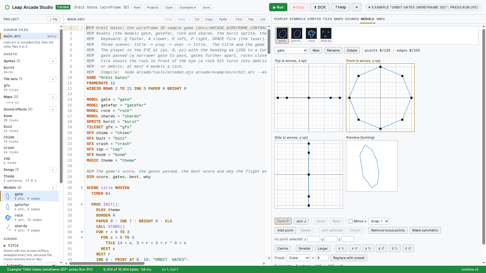
Add music and sound effects
Leap Arcade plays sound on the TS2068's AY chip, which has three voices (channels A, B and C) and a noise generator. Games have two kinds of sound, and the Sounds tab edits both:
| Kind | What it is | In your code |
|---|---|---|
| Sound effect | a short sound: a jump, a hit, a coin | SFX coin = "coin" then PLAY coin |
| Song | music on all three voices, in patterns that repeat | MUSIC theme = "theme" then PLAY theme, and NOMUSIC to stop it |
Declare them at the top of the program, next to your sprites, and start them from anywhere:
SFX coin = "coin" REM a sound effect from the Sounds tab
MUSIC theme = "theme" REM a song from the Songs view
SCENE title
PROC INIT():
PLAY theme REM the song starts and keeps playing
ENDP
...
ENDSCENE
SCENE play
PROC INIT():
NOMUSIC REM a silent game scene (or PLAY another song)
ENDP
PROC FRAME():
IF HIT(ball, bat) THEN
PLAY coin REM an effect, played over whatever else is going on
ENDIF
ENDP
ENDSCENEFRAME does not make it stutter. ENTER does not stop a song: a title song carries on into the next scene until that scene says NOMUSIC or plays another song. SILENCE stops only an effect, not the music.Writing a song. Open the Sounds tab and switch from Effects to Songs, then press New. A song is built from patterns, short pieces of music, and an order, the list that says which pattern plays when. The loop setting says where the song starts again at the end (or that it stops).
- Click in a lane to place a note, drag it to move it, drag its right end to make it longer, Delete removes it.
- Pick the sound of the note (its instrument), length and loudness in the note row first. The keyboard works like a piano:
Z S X D C V G B H N J Mplay the notes of the octave. - Space or the Pattern button plays the pattern; Song plays the whole song in order; Range plays just the part you choose. Browsers keep the page silent until you have clicked on it once.
- Use Duplicate on a pattern to make a variation, then Append to add it to the order. Repeating one bass pattern under a changing melody is how most game music is built.
- The editor tells you if something cannot be stored, and the size table shows what the music costs on the cartridge (Bounce's song is 758 bytes).
Writing a sound effect. Choose Effects, pick a preset (beep, and others) and press New, then draw the pitch, the volume and the noise over time and press Play. Copy from example… brings in an effect from one of the example games. An effect usually uses one channel.
Effects while music plays. The three voices are shared. When a one-channel effect plays during a song, it borrows channel C for its length while the song carries on in A and B. An effect that uses all three channels pauses the song until it ends. So keep your melody and bass on A and B if you want sound effects to sit on top of them, and use C for the harmony or the percussion.
The Scenes and music starter is the quickest way to hear it all working: a title song, play and game-over scenes, and effects. Bounce and every other example have a song you can open and change.
When something goes wrong
The Studio compiles as you type and marks the first problem before you press Run. The message says what is wrong and where.
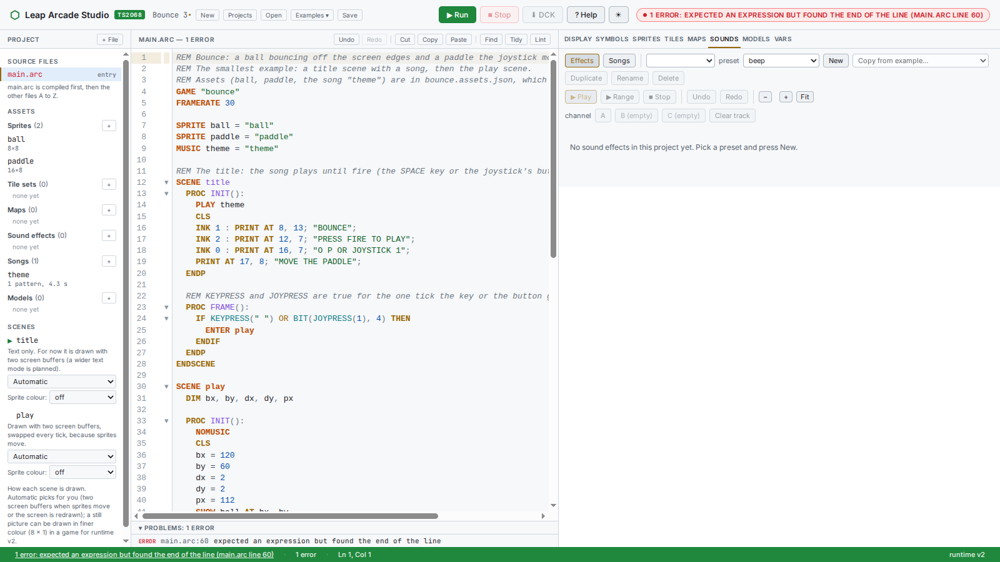
bx = bx +): the toolbar, the status bar and the Problems list all point at line 60.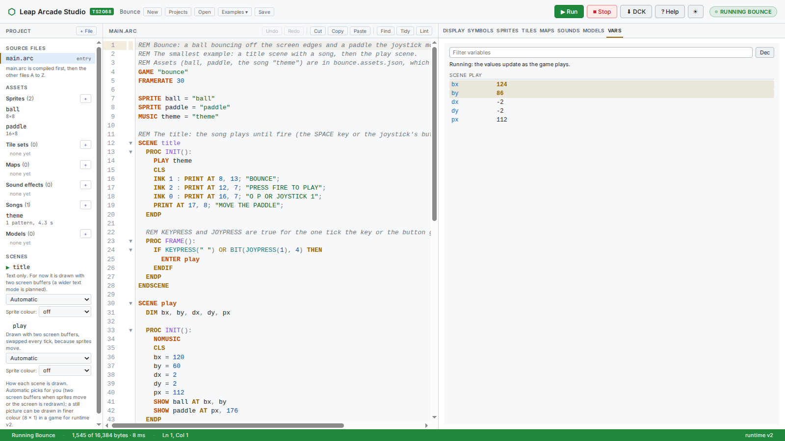
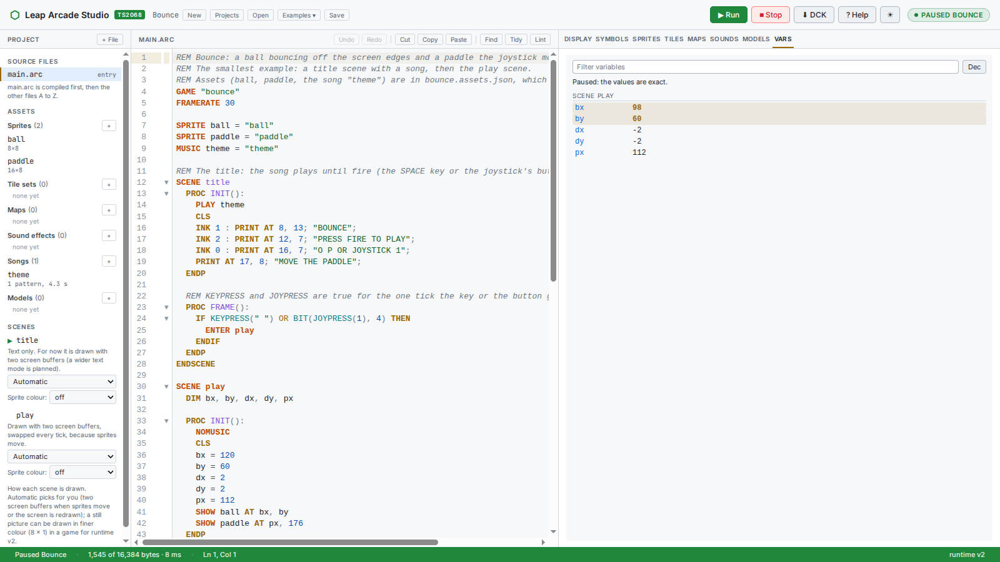
FRAME. Set a breakpoint in the editor margin to stop on a line.The size and budget table under the screen shows how much cartridge memory the code, art, text and sound use, and the meter above it says whether FRAME finishes within its time. If it does not, lower FRAMERATE (30 → 20) or draw fewer sprites.
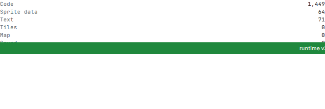
Put it on a cartridge
Press ⬇ DCK. You get a TS2068 cartridge file holding the Arcade runtime and your game, which runs on a stock TS2068 with a cartridge dock and in emulators that load .dck files (TSRun, ZEsarUX, Fuse). Save keeps your whole project (code and art) as a .leapgame file; Open loads it again. Save screen makes a PNG of the screen for screenshots.
Which runtime?
Arcade ships a few runtimes and the Studio picks the one your words need (the status bar names it). Not every feature works in every runtime, and the compiler tells you when two words clash.
| Runtime | For |
|---|---|
| v2 | the general one: sprites, tiles, text, sound, fine colour, wireframe 3D |
| v3 | scrolling worlds: WINDOW, CAMERA, tile collision, FLIP |
| v4 | first-person ray-cast views: VIEW3D |
Games made with Leap Arcade
Press Play to open a game in the Studio, already running. Then look at its code, change its art, and make it yours.
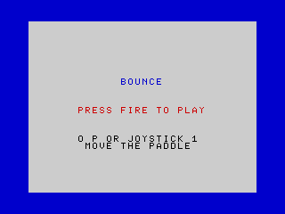
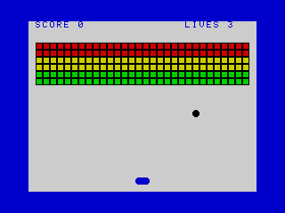
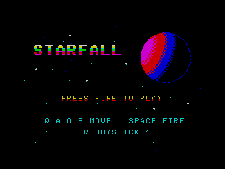
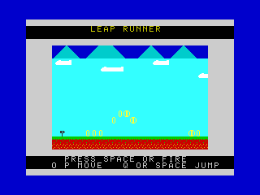
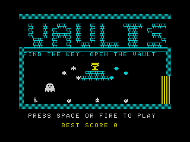
Documentation
The guide above is the place to begin. The rest is reference.
WINDOW, CAMERA and tile collision.
Wireframe 3DWIRE3D, models and drawing.
First-person viewsVIEW3D, walls and billboards.
Hardware notesThe TS2068 details the runtime relies on.
Example sourcesEvery example's .arc code and art, with notes for the bigger ones.
Credits and thanks
Leap Arcade stands on other people's work. Thank you.
TSRun, the emulator
Everything you see running in the Studio runs on TSRun, the browser emulator for the Timex Sinclair 2068 written by Josef Jelínek (josef-jelinek): the Z80, the TS2068's video, the AY sound chip, keyboard, joysticks, tape and cartridge dock. The Leap projects use a fork that adds the Leap ROMs, a few small fixes and a Kempston mouse; the emulator itself is Josef's work. Thank you, Josef: without TSRun there would be no way to run any of this in a web page.
The Timex Sinclair 2068
The computer itself: the TS2068 by Timex Computer Corporation, descended from the Sinclair ZX Spectrum by Sir Clive Sinclair and Sinclair Research. Its stock ROM is used by the cartridge test (the TS2068 ROM files are, as TSRun's notes say, partly released by Amstrad for non-commercial use and partly abandonware). The hardware notes the runtime relies on cite the TS2068 Technical Reference Manual. Timex, Sinclair and ZX Spectrum are trademarks of their owners; this project is not affiliated with them.
The Leap family
Leap Arcade, the Leap IDE and the Leap ROM languages (Leap V2 BASIC, Leap-Forth and Leap-C) are the work of nchiker (the project owner), who designed them, directed their development and approved the games. The ROMs are released under the MIT licence from their own repositories.
Built with Claude Code
Much of the code, the documentation, the example games and their art and music were written with Claude Code (Claude, by Anthropic) working under nchiker's direction, with nchiker reviewing, choosing and approving the results. Commits made that way say so in their messages.
The example games
All the example games are original works: their code, names, characters, art, sound effects and songs were made for this project. Several are in long-established genres (bat-and-ball, falling blocks, a vertical shooter, a platformer, a single-screen arena game, a maze chase, a ray-cast maze, wireframe space flight); they borrow the genre and the kind of mechanics, nothing else. Breakout, Blockfall and the rest are the names of genres of game that countless programmers have written; thanks to everyone who made those games worth imitating.
Tools it is built and tested with
CodeMirror 6 by Marijn Haverbeke and contributors is the code editor (loaded from jsDelivr, MIT licence). SjASMPlus assembles the Z80 runtime (a descendant of SjASM by Sjoerd Mastijn). The games and the runtime were cross-checked in two other TS2068 / Spectrum emulators, ZEsarUX by César Hernández Baño (whose TS2068 source was also a hardware reference) and Fuse, the Free Unix Spectrum Emulator, by Philip Kendall and its contributors. GitHub Pages hosts this site.
Full list: CREDITS.md.
Looking for the Leap IDE?
For Leap V2 BASIC, Leap-Forth and Leap-C (programs that run on the TS2068 with Leap's own ROMs), use the Leap IDE.